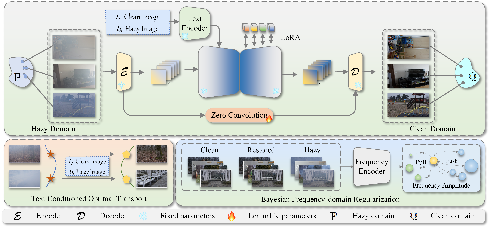
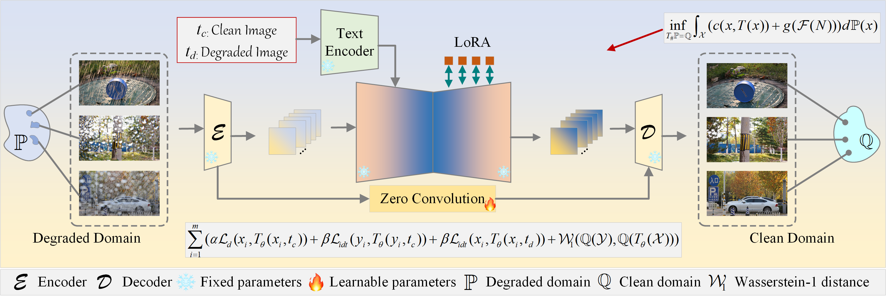
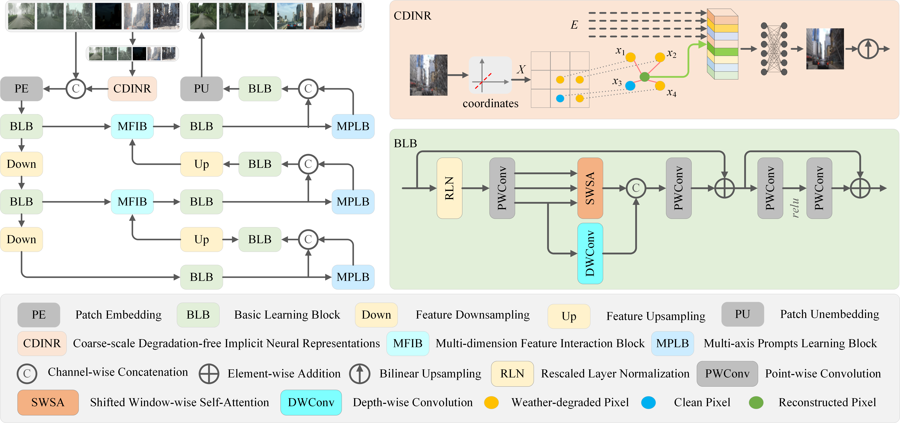
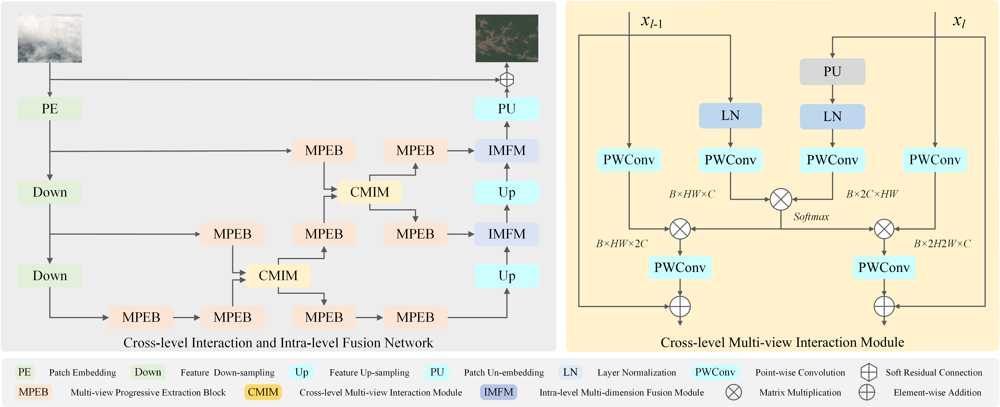
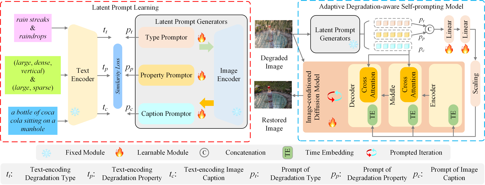
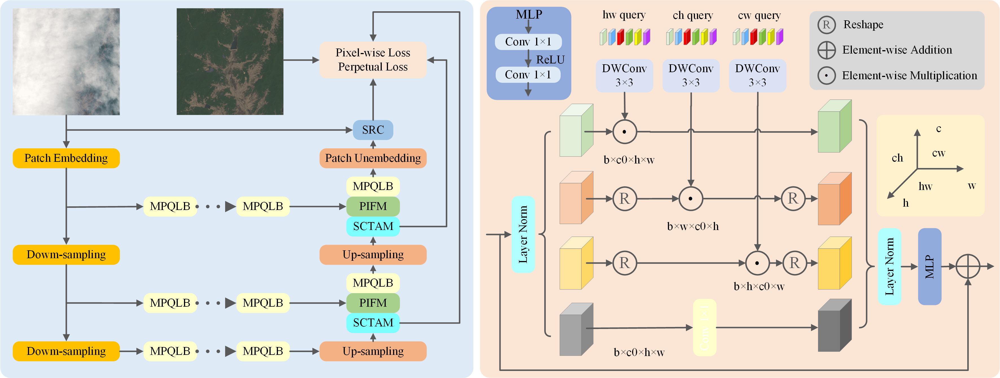
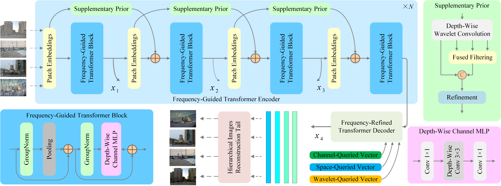

Research & biography
Computer vision &
My research interests include computer vision, general image restoration, remote sensing image processing,
unpaired learning, and multi-modal learning.
I am currently an Associate Professor in the School of Information Engineering, Chang'an University, where I conducted my postdoctoral research supervised by Prof.
Shutao Li (李树涛) , and received my Ph.D. degree supervised by Prof.
Tao Gao (高涛) .
Before that, I worked as a visiting scholar at the School of Computing, Australian National University, where I conducted research with Senior Lecturer
Jing Zhang (张静) .
Explore selected work ↘
01
Recent news
Research milestones
09/2026 One co-authored paper is accepted by NeurIPS 2026. 05/2026 One co-authored paper is accepted by Nat Commun. 03/2026 One first-authored paper is accepted by IEEE TNNLS.ESI Highly Cited 12/2025 One co-authored paper is accepted by IEEE TGRS.ESI Highly Cited
Earlier updates +
07/2025 One first-authored paper is accepted by IEEE TMM.ESI Hot, ESI Highly Cited 06/2025 One first-authored paper is accepted by IEEE TGRS. ESI Hot, ESI Highly Cited 02/2025 One co-authored paper is accepted by CVPR 2025. 12/2024 One first-authored paper is accepted by AAAI 2025. 10/2024 One first-authored paper is accepted by IEEE TMM. ESI Hot, ESI Highly Cited 07/2024 One first-authored paper is accepted by ACM MM 2024. Oral Presentation 10/2023 One first-authored paper is accepted by IEEE TGRS. ESI Highly Cited 07/2023 One first-authored paper is accepted by IEEE TCSVT. ESI Highly Cited 02/2023 One co-authored paper is accepted by IEEE TGRS. ESI Highly Cited

2026 TNNLS
When Optimal Transport Meets Photo-realistic Image Dehazing with Unpaired Training
Yuanbo Wen , Tao Gao*, Shan Liang, Dena Zhang, Ziqi Li, Jing Qin, Ting Chen
IEEE Transactions on Neural Networks and Learning Systems (TNNLS) , 2026.

2026 TMM
Structure-preserving Frequency-regularized Text-guided Optimal Transport for Unpaired Rain Streaks and Raindrops Removal
Yuanbo Wen , Tao Gao*, Ziqi Li, Qianxi Zhang, Jing Zhang, Ting Chen, Lidong Liu
IEEE Transactions on Multimedia (TMM) , 2026.

2025 AAAI
Multi-axis Prompt and Multi-dimension Fusion Network for All-in-one Weather-degraded Image Restoration
Yuanbo Wen , Tao Gao*, Jing Zhang, Ziqi Li, Ting Chen
AAAI Conference on Artificial Intelligence (AAAI) , 2025.

2025 TGRS
Cross-Level Interaction and Intralevel Fusion Network for Remote Sensing Image Dehazing
Yuanbo Wen , Tao Gao*, Ting Chen, Ziqi Li, Mengkun Liu, Lidong Liu
IEEE Transactions on Geoscience and Remote Sensing (TGRS) , 2025.

2025 TMM
All-in-one Weather-degraded Image Restoration via Adaptive Degradation-aware Self-prompting Model
Yuanbo Wen , Tao Gao*, Ziqi Li, Jing Zhang, Kaihao Zhang, Ting Chen
IEEE Transactions on Multimedia (TMM) , 2025.
2024 ACM MM Oral
Unpaired Photo-realistic Image Deraining with Energy-informed Diffusion Model
Yuanbo Wen , Tao Gao*, Ting Chen
ACM International Conference on Multimedia (ACM MM Oral) , 2024.

2023 TGRS
Encoder-free Multiaxis Physics-aware Fusion Network for Remote Sensing Image Dehazing
Yuanbo Wen , Tao Gao*, Jing Zhang, Ziqi Li, Ting Chen
IEEE Transactions on Geoscience and Remote Sensing (TGRS) , 2023.

2023 TCSVT
Frequency-oriented Efficient Transformer for All-in-one Weather-degraded Image Restoration
Tao Gao, Yuanbo Wen *, Kaihao Zhang, Jing Zhang, Ting Chen, Lidong Liu, Wenhan Luo
IEEE Transactions on Circuits and Systems for Video Technology (TCSVT) , 2023.
03
Academic service
Editorial and reviewer roles
Editorial roles
Pattern Recognition Associate Editor Scientific Reports Associate Editor Journal of King Saud University - Computer and Information Sciences Associate Editor Journal of Imaging Guest Editor
Conference reviewer
IEEE Conference on Computer Vision and Pattern Recognition (CVPR 2024, 2025, 2026)
IEEE International Conference on Computer Vision (ICCV 2025)
European Conference on Computer Vision (ECCV 2024, 2026)
International Conference on Machine Learning (ICML 2025, 2026)
Annual Conference on Neural Information Processing Systems (NeurIPS 2024, 2025, 2026)
International Conference on Learning Representations (ICLR 2025, 2026, 2027)
AAAI Conference on Artificial Intelligence (AAAI 2025, 2026, 2027)
International Joint Conference on Artificial Intelligence (IJCAI 2024, 2025, 2026)
ACM International Conference on Multimedia (ACM MM 2024, 2025, 2026)
British Machine Vision Conference (BMVC 2025, 2026)
International Conference on Acoustics, Speech, and Signal Processing (ICASSP 2025, 2026)
IEEE International Conference on Image Processing (ICIP 2024, 2025, 2026)
Journal reviewer
IEEE Transactions on Pattern Analysis and Machine Intelligence (TPAMI)
IEEE Transactions on Image Processing (TIP)
IEEE Transactions on Neural Networks and Learning Systems (TNNLS)
IEEE Transactions on Multimedia (TMM)
IEEE Transactions on Circuits and Systems for Video Technology (TCSVT)
IEEE Transactions on Geoscience and Remote Sensing (TGRS)
IEEE Transactions on Intelligent Transportation Systems (TITS)
Pattern Recognition (PR)
Expert Systems with Applications (ESWA)
Neural Networks (NN)
Information Sciences (INS)
Knowledge-Based Systems (KBS)
Engineering Applications of Artificial Intelligence (EAAI)
IEEE Transactions on Instrumentation and Measurement (TIM)
Neurocomputing (NEUCOM)
IEEE Journal of Selected Topics in Applied Earth Observations and Remote Sensing (JSTARS)
Pattern Recognition Letters
Image and Vision Computing (IMAVIS)
Computer Vision and Image Understanding (CVIU)
Scientific Reports
Journal of Visual Communication and Image Representation (JVCI)
The Visual Computer (TVCJ)
Applied Soft Computing Journal (ASCJ)